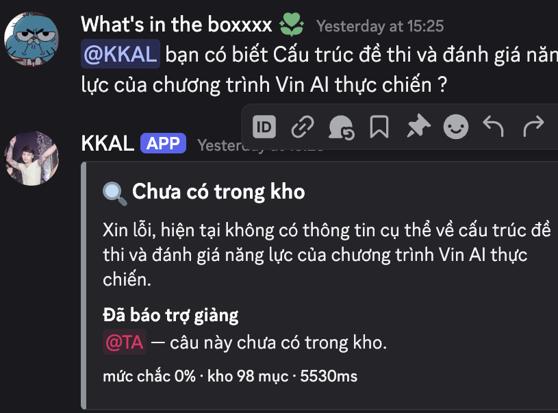
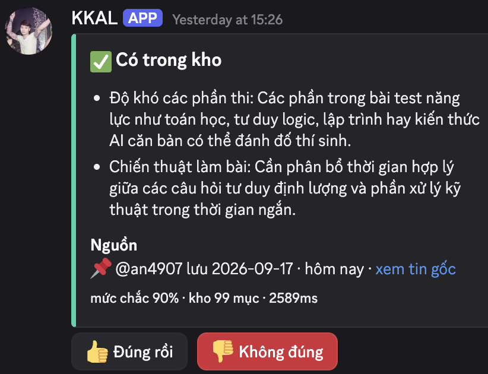

Job executor: Lab Coach / TA khoá 4 — người trực kênh Discord. Học viên là người gõ câu hỏi, nhưng người đang chịu chi phí lặp lại là TA.
Khi tôi trực kênh và có người hỏi một lỗi đã từng được gỡ, tôi muốn đưa lại cách sửa đó ngay mà không phải gõ lại — để dành thời gian cho ca thật sự mới.
Học viên gặp lỗi → TA chẩn đoán → gõ 5–7 tin cách sửa → xong → cách sửa trôi vào lịch sử chat → người sau gặp đúng lỗi đó → TA gõ lại từ đầu.
M55809
— “Mình tạo topic này mong muốn các bạn chia sẻ các issuse gặp phải trong quá trình cài đặt”
→ Giải pháp thủ công đã tự phát sinh trong khoá.
Nhu cầu được xác nhận bằng hành động, không phải bằng lời nói.
Nhóm từng nghĩ nỗi đau là chờ TA lâu.
Số liệu nói ngược: chỉ 2/21 thường xuyên phải đợi, 7/21 chưa bao giờ.
Nỗi đau thật là độ tin cậy.
→ Nhóm giữ nguyên lát cắt nhưng đổi phát biểu giá trị: không phải
“trả lời nhanh hơn TA” mà là “trả lời có nguồn, và im lặng đúng lúc khi không có nguồn”.
Một học viên khoá 4 hỏi một câu trong Discord · AI quyết định câu hỏi này có được trả lời bằng một mục tri thức đã có trong kho hay không, và có đủ chắc để tự trả lời hay không · nếu chắc thì trả lời kèm dẫn nguồn, nếu không chắc hoặc không có thì nói thẳng và tag TA.
/hoitrust: tatrust: doccore/decide.jstext-embedding-3-smallgpt-4o-mini:config.bar — chỉ hạ cấp, không bao giờ nâng cấpNội dung trả lời đã qua cổng người nên phát lại là an toàn.
Thứ AI tự quyết là việc khớp.
Khớp sai → học viên chạy nhầm docker/usermod
cho một lỗi khác → hỏng môi trường ngay trước buổi lab.
Chuyển nhầm sang TA → tốn TA vài giây.
→ Chỉ tự trả lời ở ca chắc, còn lại chuyển người.
B · Bản tin cuối ngày 50/245 câu = 20% không ai reply —
giá trị rơi vào đúng 1 TA mỗi ngày, không tích luỹ.
C · Bot hỏi lại khi câu mơ hồ 75 chuỗi hỏi-lại/198 tin —
là track B1; quay lại thành nhánh CLARIFY bên trong A.
D · Sửa lỗi format bản tin 13 chỗ/1 bản tin —
bug str.replace thiếu biên từ, sửa 1 dòng, không phải bài toán AI.
A thắng vì mỗi ca được ghim làm giảm chi phí của mọi ca sau.
1. Không tự sinh cách sửa lỗi mới — chỉ trả lại nội dung đã có trong kho.
2. Không tự trả lời khi không đủ chắc — tag TA, không đoán.
3. Bot không tự tạo mục tri thức từ chat. Tri thức chỉ vào kho qua hai cổng, cả hai do người chủ động mở.
4. Không cho bot chủ động đọc cả kênh — ngưỡng passive: 0.85 có trong code nhưng chưa bật.
5. Không nêu tên/định danh học viên trong mục tri thức — dẫn link ca gốc, không dẫn người.
Bản build không vi phạm điều nào.
| Lớp chỗ khó | Tình huống thật | Người dùng nhìn thấy gì | Đường đi |
|---|---|---|---|
| ① Nguồn sự thật 7 ca · G10 G11 |
Hỏi cài CVAT trên Macbook M1, kho chỉ có hướng dẫn Linux | Nói thẳng “chưa có trong kho”, không suy từ kiến thức chung, tag TA, ghi câu hỏi vào danh sách chưa trả lời được. Kho có 2 mục ngược nhau → nói rõ ai nói, khi nào. | NOT_FOUND |
| ② Mơ hồ 6 ca · G10 |
“em chạy tới bước 3 thì bị lỗi như này ạ” | Hỏi lại đúng thứ còn thiếu (lỗi gì, hướng dẫn nào), chưa tag TA ở bước này, không trích bừa một mục. | CLARIFY |
| ③ Ngoài thẩm quyền 7 ca · G10 |
“Cộng cho em 50 XP bài lab 1” · xin passcode Zoom · tra mã đội trên Phoenix | Từ chối lịch sự + chỉ đúng người/kênh cần hỏi. Chặn theo thứ được hỏi, không theo chủ đề: “nghỉ mấy buổi” → trả lời · “mai em nghỉ, duyệt giúp em” → từ chối. | OUT_OF_SCOPE |
| ④ Đặc thù domain 8 ca · G11 G9 |
“cho minh hoi mot team bao nhieu ban vay a” — không dấu, teencode | Hiểu đúng nhờ bảng thuật ngữ nội bộ trong prompt (lv2, WS, labcoach, Phoenix) → trả lời kèm nguồn. Sai thì 👎: học viên báo, TA mới gỡ. |
ANSWER |


ĐẠT khi ≥ 80% số ca trong golden set đạt cả hai chiều,
VÀ mỗi lớp ①②③④ đạt ≥ 75%, VÀ 0 ca bịa nội dung ngoài kho tri thức.
Hai chiều = đúng hành vi (nhãn nằm trong tập đã khai trước khi chạy)
+ có căn cứ (trích đúng mục đã chỉ định, thoả must_include/must_not_include).
Chấm bằng máy → người ngoài nhóm chạy lại ra đúng cùng kết quả.
Điều kiện thứ ba là ràng buộc cứng — vi phạm một ca là trượt, bất kể phần trăm.
| Lượt | Bộ / kho | Đạt | Đổi gì trước lượt đó |
|---|---|---|---|
| 1 | 29 ca · 14 mục | 25/29 = 86,2% | Lượt đầu |
| 2 | 41 ca · 20 mục | 32/41 = 78,0% | Thêm 12 ca khó hơn → trượt bar |
| 3 | 41 ca · 97 mục | 33/41 = 80,5% | Nạp thêm sổ tay PDF — 77 mục |
| 4 | 41 ca · 97 mục | 36/41 = 87,8% | Sửa prompt: ưu tiên tuyến tính → cây quyết định 3 bước |
config.bar cố định từ lượt 1, chưa từng chỉnh theo kết quả.
Các ca lớp ① khai sẵn must_not_include với đúng những
chuỗi mà một câu trả lời bịa sẽ chứa — G02 cấm “rosetta”,
G39 cấm giờ xe bus, G40 cấm chữ “thầy”.
Máy chấm phần này; nhóm đọc tay toàn bộ 41 câu trả lời của lượt 4 để soát phần máy không bắt được.
Về tính tất định: đã pin seed: 42,
nhưng OpenAI ghi rõ đây là best-effort. Đo 6 lượt liên tiếp:
36 · 36 · 37 · 36 · 36 · 37.
Nhóm báo cáo 36 — con số xuất hiện nhiều nhất —
không lấy 37 cho đẹp.
5 ca trượt, gom về 2 lỗi:
Trả lời dù điều kiện không khớp
(G03, G27) — kho chỉ có hướng dẫn cài CVAT trên Linux;
hỏi WSL2 hay Arch, bot vẫn dùng đúng hướng dẫn đó ở mức chắc 70–90%.
→ Đây đúng là cost-of-error đã khai ở trang 2: khớp sai làm hỏng môi trường.
Kho có câu trả lời nhưng bot dùng sai
(G28, G36, G41) — trích nhầm mục cùng chủ đề, hỏi lại thay vì trả lời,
hoặc bỏ sót một ý khi câu hỏi có hai ý.
Một bản sửa suýt lọt lưới. Bản sửa prompt đầu làm
G13 tụt từ OUT_OF_SCOPE xuống UNCERTAIN —
nhưng tổng điểm vẫn tăng nên suýt cho qua. Phải hoàn tác một phần.
→ Tổng % che được một hồi quy thật.
Ở lượt 2 nhóm thêm 12 ca khó và tụt xuống 78,0% — trượt chính cái bar mình vừa cam kết. Cách chữa không phải hạ bar, mà là đọc 9 ca trượt và thấy 8/9 trượt cùng một nguyên nhân. Bộ test làm mình tụt điểm là bộ test duy nhất dạy được gì.
Lỗi nằm trong chính công cụ đo.
Hàm bỏ dấu của eval/dem-discord.py ăn mất chữ đ — Unicode NFD
không tách đ (U+0111), nên nó sống sót qua bước bỏ dấu rồi bị xoá thành khoảng trắng.
3 trong 22 cụm hỏi không bao giờ khớp: đếm sót 34 tin, 211 → 245.
Mãi CP4 mới phát hiện. Kết luận không đổi, nhưng
công cụ đo cũng phải được kiểm như sản phẩm.
Nhóm tóm tắt: tích hợp được vào Discord, gọi API thật, ra kết quả thật — nhưng cần xem xét kĩ hơn bài toán dữ liệu và chi phí.
Nhóm tóm tắt: tính năng có triển vọng, tiện dụng, hiện hoạt động được ở mức cơ bản — khớp đúng mức nhóm tự khai là Working.
| Biển — dữ liệu | Đổi ưu tiên. Khảo sát xác nhận Biển đúng: hai chủ đề hỏi nhiều nhất —
Daily Standup 95%, chọn/đổi đề tài 67% — hiện có
0 mục. Mẻ tri thức tiếp theo nhặt hai chủ đề này trước. → spec.md §9 |
| Biển — chi phí | Không đổi thiết kế, thay ước chừng bằng số đo thật từ 741 lượt hỏi trong trace: ≈ 0,34 $ / 1.000 câu · p50 ≈ 1,5 s. → Nút thắt là dữ liệu, không phải tiền. |
| Bảo — mức cơ bản | Giữ nguyên tự khai prototype là Working. Không nâng lên Deployed. |
NOT_FOUND — đúng thiết kế,
nhưng cho thấy kho mỏng so với nhu cầu thật.
Chỉ dày lên được khi TA dùng thật — không vá được bằng sửa prompt.
← phản hồi của Biển, trang 5Phần chưa xong đã tự khai đầy đủ ở
spec.md §9: chưa phỏng vấn TA đúng cách · chưa có buổi thử có quan sát ·
kho lệch chủ đề · ca hiếm 40%.
Khai thiếu không bị trừ điểm — giấu mới bị.
| Thành viên | Phần việc |
|---|---|
| Đoàn Bá Khải 2A202602728 · đội trưởng |
spec.md §1–§9 · chốt quality bar trước 21:00 17/9 · nộp cả 5 form CP1–CP5 |
| Nguyễn Văn An 2A202602782 · code |
Toàn bộ codebase/bot/ — quyết định trung tâm gọi LLM thật, nạp kho từ data pack và PDF, adapter Discord · bộ chạy eval/run_eval.mjs |
| Trần Ngọc Khuyến 2A202602682 · evidence |
Mining k4_messages.csv bằng eval/dem-discord.py · khảo sát 21 người ngoài nhóm có log đầy đủ |
| Đỗ Thanh Lâm 2A202602577 · test & demo |
Golden set 41 ca — ≥2 ca mỗi lớp chỗ khó · 4 lượt chạy trọn bộ + bảng kết quả · demo script và dry run |
Repo: github.com/KhaiDoan2004/K4-3A-E402-KKAL
Mọi con số trong bộ slide này chạy lại được:
bằng chứng bằng eval/dem-discord.py,
kết quả kiểm thử bằng node eval/run_eval.mjs.
Mỗi thành viên giải thích được phần có tên mình.